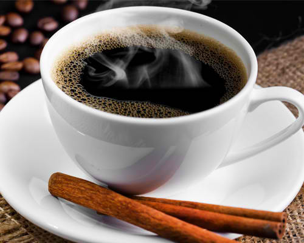
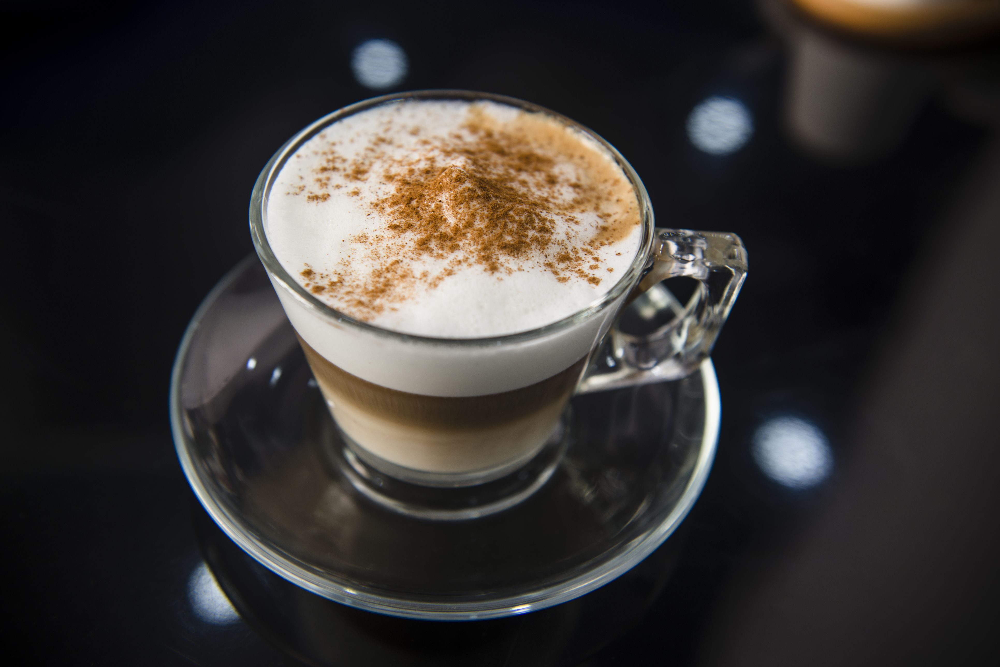
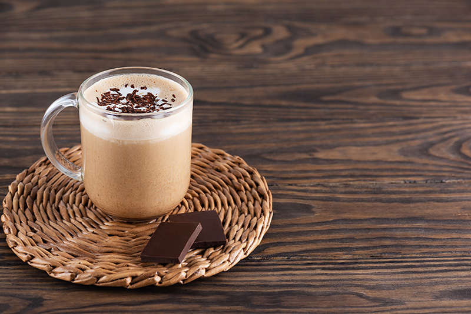
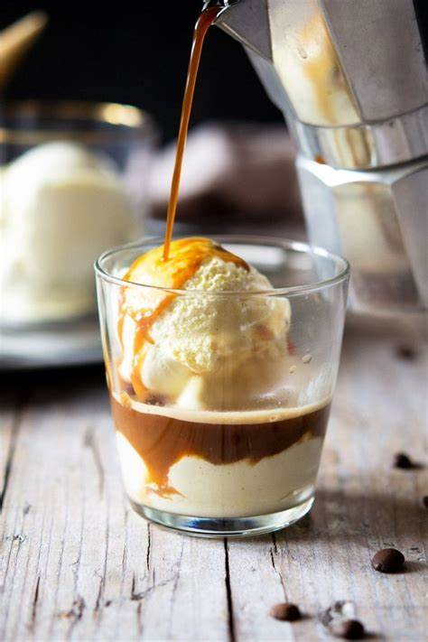

เคยสงสัยไหมว่ากาแฟมีตั้งหลายแบบหลายเมนู แต่ละแบบมันแตกต่างกันยังไงน้า? วันนี้เราจะมาทำความรู้จักกันว่า เครื่องดื่มกาแฟมีอะไบ้าง
-เอสเพรสโซ (Espresso) คำว่า Espresso มาจากภาษาอิตาเลียน แปลเป็นไทยได้ว่า กาแฟอัด เอสเพรสโซจัดว่าเป็นกาแฟที่ได้รับความนิยมดื่มกาแฟชนิดเข้มข้นหรือกาแฟดำ เนื่องจากเอสเพรสโซเป็นกาแฟที่มรรสชาติแก่และเข้มที่สุด เนื่องจากผงกาแฟที่ผ่านการคั่วบดชนิด Dark Roasted จึงเหมาะสำหรับนักดื่มที่ต้องการกาแฟสักแก้วที่มาช่วยให้ตาสว่างเอสเพรสโซมักดื่มนิยมดื่มโดยไม่ผสมเครื่องปรุงชนิดใดๆ

-อเมริกาโน หรือหลาย ๆ คนมักเรียกว่า กาแฟดำ แถมแคลอรีน้อย และดื่มง่ายที่สุด โดยรูปแบบคือการใส่น้ำเพิ่มเข้าไปในกาแฟเอสเปรสโซเพื่อให้ให้เจือจางลง มีทั้งแบบเย็นและแบบร้อน หรือบางสูตรอาจมีการเพิ่มน้ำผึ้ง น้ำส้ม น้ำเชื่อมต่าง ๆ ลงไปเพิ่มความหอมหวาน และดื่มง่ายขึ้นอีกด้วย

-ลาเต้ เป็นเมนูกาแฟผสมนมที่รสชาติไม่เข้มมาก เหมาะสำหรับมือใหม่ที่เพิ่งเริ่มหัดกินกาแฟ วิธีทำก็คือนำนมมาสตรีมให้ร้อน เติมกาแฟเอสเปรสโซลงไป และเติมนมลงไป หรือหลายคนอาจจะคุ้นเคยกับเมนูลาเต้ร้อนมักจะมีการทำลาเต้อาร์ต โดยการเติมนมลงไปให้เป็นลวดลายต่าง ๆ ด้วย เพิ่มความน่ารักน่ากินไปอีก
-คาปูชิโน กาแฟนมที่มีฟองนมนุ่ม ๆ ด้านบนเป็นเอกลักษณ์ โดยวิธีคือจะนำนมมาสตรีมให้ร้อน และใส่กาแฟเอสเปรสโซลงไปประมาณ 6 ออนซ์ปริมาณต่อ 1 แก้ว และใส่ฟองนมลงไปท็อปด้านบน ดื่มได้ทั้งแบบกาแฟร้อน กาแฟเย็น และเป็นเมนูกาแฟปั่นก็ได้

-มอคค่า เมนูกาแฟเอาใจช็อกโกแลตเลิฟเวอร์ เพราะเมนูนี้มีส่วนผสมของกาแฟเอสเปรสโซ และช็อกโกแลตซอสลงไปในปริมาณเท่า ๆ กัน และตามด้วยนมร้อน สำหรับกาแฟมอคค่าก็ถือว่ากินง่าย หอมนัวด้วยกลิ่นช็อกโกแลต สามารถกินได้ทั้งแบบร้อน แบบเย็น และแบบปั่น

-มักคิอาโต เป็นกาแฟเอสเปรสโซที่เติมนมหรือฟองนมลงไป ทำให้รสชาตินัวและดื่มง่ายขึ้น กาแฟมักคิอาโต้กินได้ทั้งแบบร้อน แบบเย็น และแบบปั่น ส่วนใหญ่เมนูมักคิอาโต้ร้อนมักจะมีขนาดแก้วที่ค่อนข้างเล็ก ถ้าเทียบกับเมนูกาแฟร้อนอื่น ๆ เพราะใส่แค่กาแฟเอสเปรสโซ 1-2 ช็อต กับนมหรือฟองนมเท่านั้น

-Flat White คือ Espresso หรือ Ristretto (กาแฟช็อตที่มีความเข้มข้นมากกว่า Espresso) ที่ใส่นมร้อน (Steamed Milk) ลงไปโดยที่ไม่มีโฟมนมมากเท่า Latte มีเพียงเล็กน้อยเรียบ ๆ บาง ๆ ที่เป็นที่มาของชื่อเมนู “Flat White” นั่นเอง
-อัฟโฟกาโต้ คือ เมนูกาแฟที่ถือกำเนิดจาก อิตาลี เมืองที่เป็นต้นตำรับเมนูกาแฟและกาแฟชั้นเยี่ยมของโลก อีกทั้งเป็นเมืองที่ขึ้นชื่อเรื่องความสวยงามที่หลายคนอยากไปสัมผัสสักครั้ง ซึ่งเมนูนี้เป็นอีกเมนูของอิตาลีที่ได้นำ สองสิ่ง ที่ขึ้นชื่อมารวมเข้าด้วยกัน ก็คือ กาแฟและไอศกรีม ‘เจลาโต้’ (Gelato) เป็นการนำกาแฟ “เอสเพรสโซ่” ที่เข้มข้น กับ ไอศกรีม ‘เจลาโต้’ (Gelato) วานิลลา ที่หวานละมุน มาผสมผสานเข้าด้วยกันทำให้รสชาติของกาแฟและไอศกรีมตัดกันได้อย่างลงตัว
